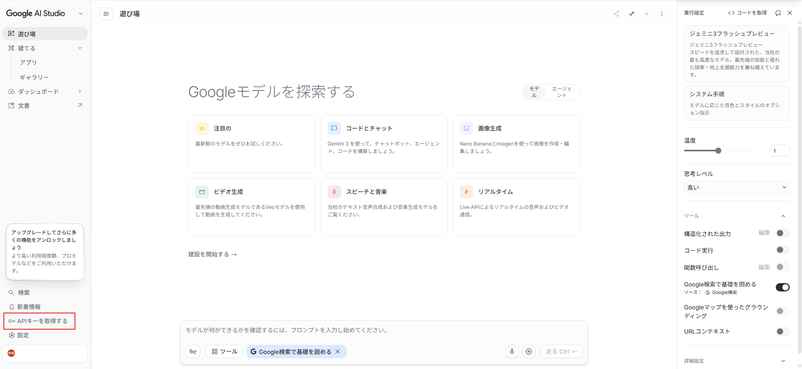
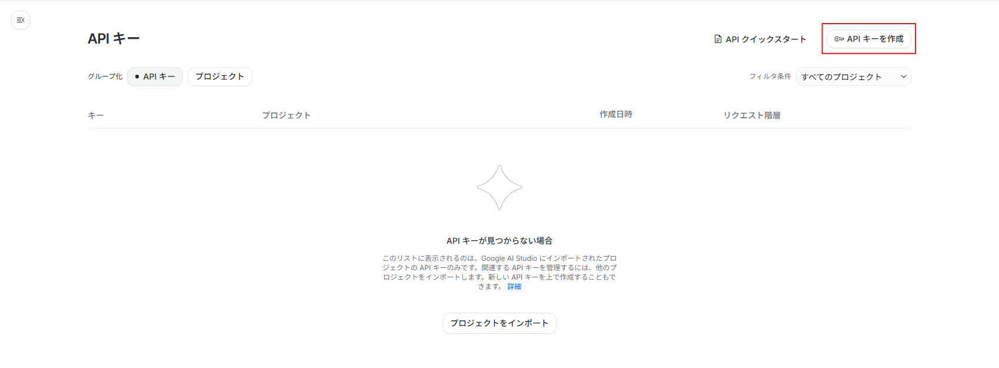
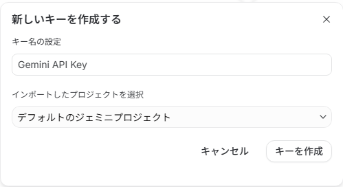
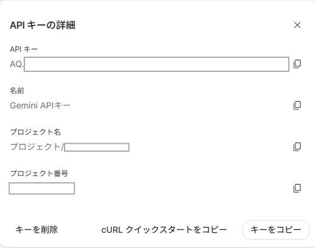

1
Gemini APIキーを取得する
Google AI Studio にアクセスし、Googleアカウントでログインします。
左下の「APIキーを取得する」を選択します。

APIキー一覧画面で、右上の「APIキーを作成」を押します。

キー名を入力し、使用するGoogle Cloud Projectを選択して「キーを作成」を押します。
個人の検証では、デフォルトのプロジェクトを選んで進めて構いません。

APIキーが作成されたら、「キーをコピー」を押してコピーします。
コピーしたAPIキーは、次の手順でGitHub Secretsに登録します。

注意：APIキーは公開しない
APIキーは、Gemini APIを使うための大切な鍵です。
他の人に見せたり、GitHubに直接書いたりしないでください。
このあと、GitHub Secrets に登録して安全に使えるようにします。